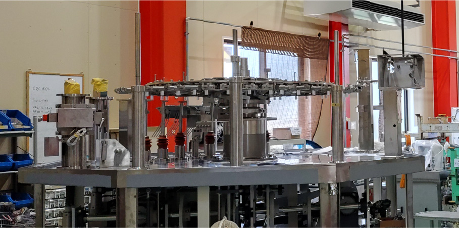
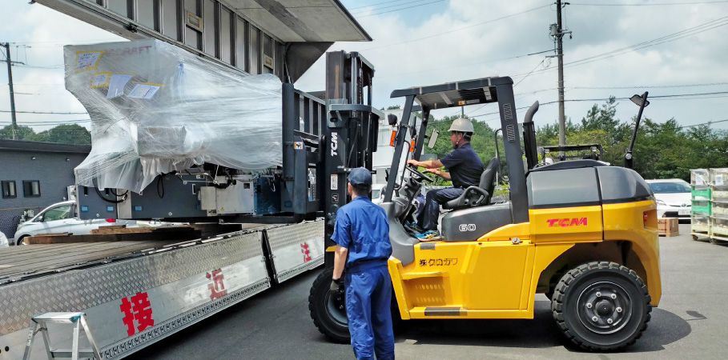
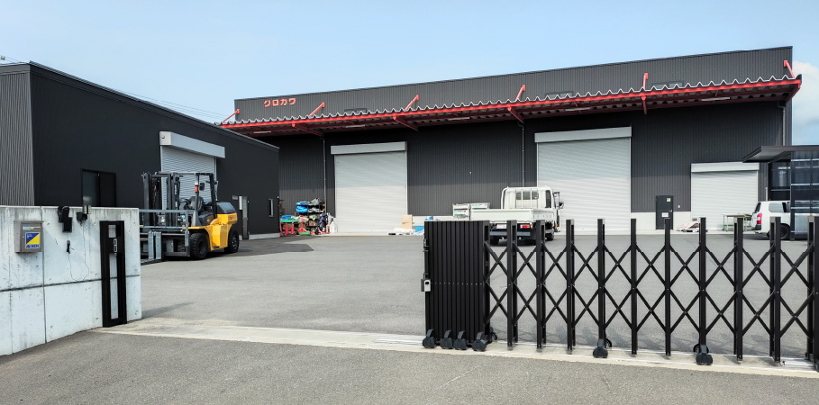

製造現場を支える、確かな技術と総合力
株式会社クロカワは、長年にわたり製造業の現場に携わり、包装機械をはじめとする機械装置の製造を、さまざまな工程から支えてきました。
部品の受け入れ・管理から、機械組立、完成品の梱包・発送まで、製造工程に関わる幅広い業務に対応しています。
お客様の生産工程に合わせて、個々の業務だけでなく、複数の工程をまとめて請け負うことも可能です。
部品を受け入れ、管理し、必要な工程へ供給する。
そして組み立て、完成した製品を梱包し、安全に出荷する。
こうした製造工程の一つひとつを確実につなぎ、現場が円滑に動き続ける環境をつくることが、クロカワの役割です。
さらに、人材派遣を通じた人材面からのサポートや、産業廃棄物・一般廃棄物の処理にも対応。
製造現場を知る企業だからこそできる、きめ細かなサービスで、お客様の生産活動を幅広く支えています。

機械組立

一つひとつの部品を、
確かな技術で一台の機械へ。
機械装置に使用されるさまざまな部品を組み合わせ、製品として完成させる機械組立を行っています。
多くの部品を正確に組み付け、一台の機械として完成させるためには、確かな技術と豊富な経験が欠かせません。
製品の性能や品質を左右する重要な工程だからこそ、作業の正確さはもちろん、一つひとつの工程を丁寧に確認しながら、確実な組立を行っています。
長年にわたって製造現場で培ってきた経験を活かし、製品や工程に応じた柔軟な対応を心がけています。
クロカワの強み
- 長年培ってきた機械組立の経験
- 正確さと丁寧さを重視した作業
- 品質を意識した確実な工程管理
- 現場経験を活かした柔軟な対応力
物流
必要なものを、必要なときに、
必要な場所へ。
製造に必要な部品の受け入れから、保管、仕分け、工程への供給まで、製造現場における物流業務を幅広く担っています。
一台の機械には、数千点に及ぶ部品が使用されることもあります。
クロカワでは、多種多様な部品を正確に管理し、製造工程の進捗に合わせて必要な部品を必要なタイミングで供給。
部品の不足や供給の遅れによって製造現場が止まることのないよう、現場の流れを理解した物流体制を整えています。
クロカワの強み
- 多品種・大量の部品を正確に管理
- 生産工程に合わせたタイムリーな部品供給
- 製造現場を止めない物流体制
- 安全と効率を両立した現場管理
梱包・発送

大切な製品を、
安全に、確実に届ける。
完成した機械装置の梱包から発送、トラックへの積み込みまで、製造工程の最後を担う業務を行っています。
機械装置は、製品ごとに大きさ・形状・重量が異なります。
そのため、輸送中の振動や衝撃による破損を防ぐためには、製品の特性に合わせた適切な梱包と安全な取り扱いが必要です。
クロカワでは、一台ごとの製品特性や輸送時のリスクを考慮し、適切な方法で梱包を行います。
製品が完成した後も、お客様のもとへ安全に届けられるまで責任を持って対応します。
クロカワの強み
- 製品特性に応じた梱包対応
- 輸送中のリスクを考慮した安全管理
- 梱包から積み込みまでの一貫対応
- 製品を最後まで大切に扱う責任感
派遣事業
人の力で、
製造現場を支える。
製造業務だけでなく、設計、調達、生産管理、品質保証、開発など、製造業に関わる幅広い分野へ人材を派遣しています。
製造現場には、それぞれの業務に応じた専門的な知識や経験が必要です。
クロカワは、長年にわたって製造現場に携わってきた経験を活かし、現場で求められる業務内容や人材の役割を理解したうえで、人と企業をつないでいます。
お客様の業務内容やニーズに合わせ、一人ひとりの経験や適性を活かした人材配置を行うことで、さまざまな部門の業務を支えています。
クロカワの強み
- 製造業に特化した現場理解
- 製造から設計・管理部門まで幅広い人材対応
- 現場経験を活かした人材配置
- お客様のニーズに合わせた柔軟な対応
廃棄物処理事業

安全で衛生的な
製造環境を支える。
製造現場から発生する産業廃棄物・一般廃棄物の処理にも対応しています。
製造活動を行ううえで、廃棄物を適切に管理・処理することは、安全で衛生的な職場環境を維持するために欠かせません。
クロカワでは、関係法令を遵守し、廃棄物を適正に管理・処理することで、製造現場の環境整備をサポートしています。
ものづくりだけでなく、その現場で働く人が安心して仕事に取り組める環境づくりまで支えることも、私たちの重要な役割です。
クロカワの強み
- 産業廃棄物・一般廃棄物への対応
- 法令遵守を徹底した適正管理
- 製造現場の環境・衛生管理をサポート
- 安全で働きやすい職場環境づくりへの貢献
クロカワだからできること
ものづくりの流れを、
現場から支える。
製造現場では、一つの工程だけで製品が完成するわけではありません。
部品を受け入れ、管理し、必要な場所へ届ける。
そして組み立て、完成した製品を梱包し、安全に出荷する。
その一つひとつの工程が正確につながることで、初めてものづくりは成り立ちます。
株式会社クロカワは、こうした製造工程のさまざまな業務を、現場から一貫して支えています。
業務の一部をお任せいただくことはもちろん、物流・組立・梱包・発送など、複数の工程をまとめて請け負うことも可能です。
長年培ってきた経験と技術。
多様な業務に対応できる人材。
そして、製造現場を知っているからこその柔軟な対応力。
これらを組み合わせ、単に一つの業務を担うだけではなく、製造現場全体が円滑に動くための力を提供することが、クロカワの強みです。
これからも、お客様の生産活動を支える信頼できるパートナーとして、安全・品質・効率を大切にしながら、現場に必要とされるサービスを提供してまいります。